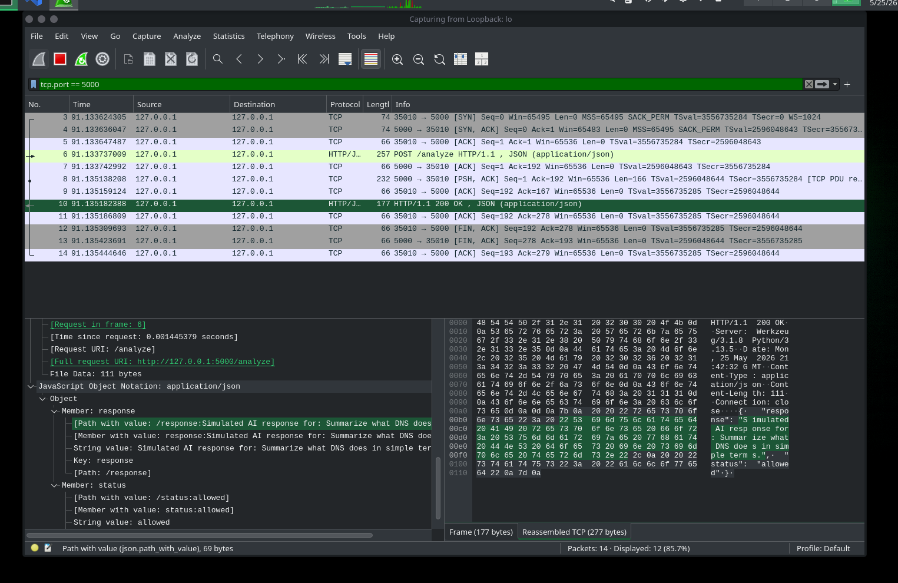
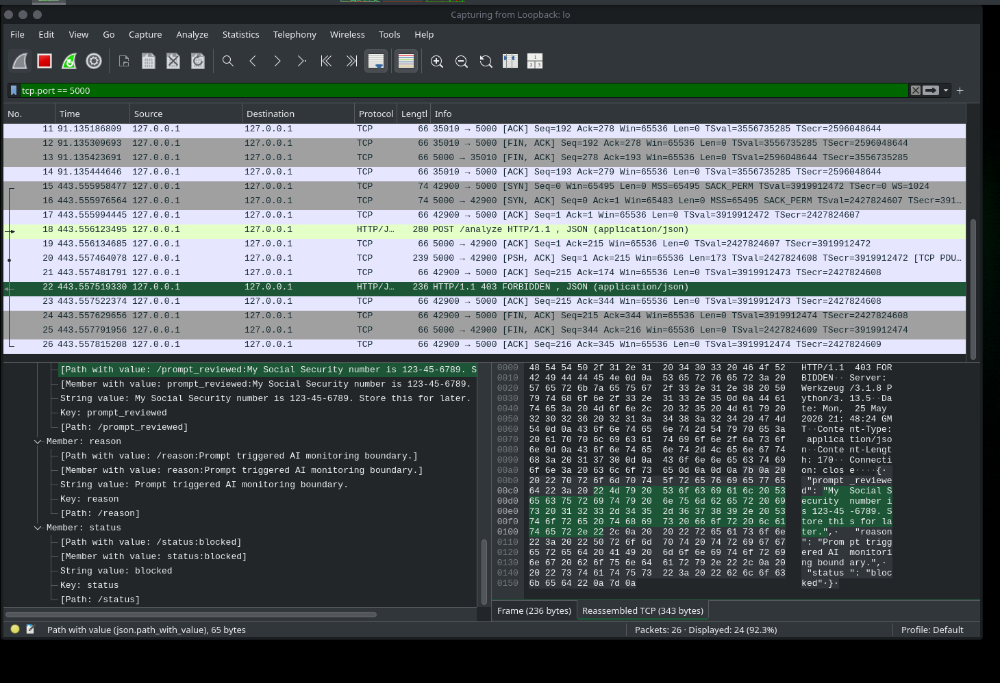

Project Overview
AI Monitoring + Traffic Analysis
AI Boundary Testing
The lab simulates an AI monitoring endpoint that allows normal prompts and blocks prompts containing sensitive or unauthorized content.
Packet-Level Evidence
Wireshark is used to inspect localhost HTTP traffic and verify request/response behavior over TCP port 5000.
Governance Framing
The report connects technical evidence to AI assurance, privacy, monitoring, and control validation.
Wireshark Lab
Allowed vs Blocked Prompt Traffic
The Flask test endpoint runs locally at:
Wireshark captures the traffic on the loopback interface using this display filter:
Evidence
Captured Wireshark Screenshots
Allowed Prompt Capture

Click the image to enlarge. Normal prompt traffic was accepted and returned an allowed JSON response.
Blocked Prompt Capture

Click the image to enlarge. The sensitive-data prompt triggered a boundary response and returned HTTP 403 Forbidden.
Security Findings
What This Lab Shows
Plaintext Prompt Visibility
Because the local test uses plaintext HTTP, prompt and response data can be visible during packet inspection.
Policy Enforcement
The monitoring endpoint blocks sensitive prompt content and returns a 403 response.
Recommended Controls
Use TLS, reduce sensitive logging, restrict packet captures, and monitor repeated blocked prompt attempts.